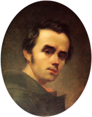
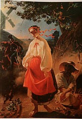

1814 -1837: Дитинство і молодість

Тарас Шевченко народився 9 березня 1814 року у селі Моринці Звенигородського повіту Київської губернії (нині Звенигородського району Черкаської області). Був третьою дитиною селян-кріпаків Григорія Івановича Шевченка і Катерини Якимівни Бойко після сестри Катерини та брата Микити.
1838-1845: Петербурзька академія мистецтв

Після викупу Шевченко оселився на 4-й лінії Васильєвського острова у будинку № 100. Незабаром він став студентом Петербурзької академії мистецтв, а вже там — улюбленим учнем Брюллова.
Будучи вже неабияким портретистом, упродовж навчання він опанував також мистецтво гравюри й виявив видатні здібності як графік та ілюстратор.